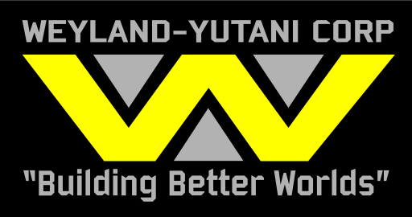

I studied Mechanical Engineering, worked as an operator in the Automotive Industry - at one point I had enough of steel and the boundaries of the physical world.
Change of ends: from physical to digital, from User to Developer.
- - -
It is an idealized or physical device implementing a Boolean function; that is, it performs a logical operation on one or more binary inputs and produces a single binary output.
It stands for American Standard Code for Information Interchange. Computers can only understand numbers, so it is the numerical representation of a character such as 'a' or '@' or an action of some sort.
It is a form of computer data storage which stores frequently used program instructions to increase the general speed of a system. It can be randomly accessed. Data items to be read or written in almost the same amount of time irrespective of the physical location of data inside the memory.
A formal language that specifies a set of instructions that can be used to produce various kinds of output. They generally consist of instructions for a computer and can be used to create programs that implement specific algorithms.
A hierarchical decentralized naming system for computers, services, or other resources connected to the Internet or a private network. It associates various information with domain names assigned to each of the participating entities.
An application protocol for distributed, collaborative, and hypermedia information systems. It is the foundation of data communication for the World Wide Web. It is the standard protocol to exchange or transfer hypertext.